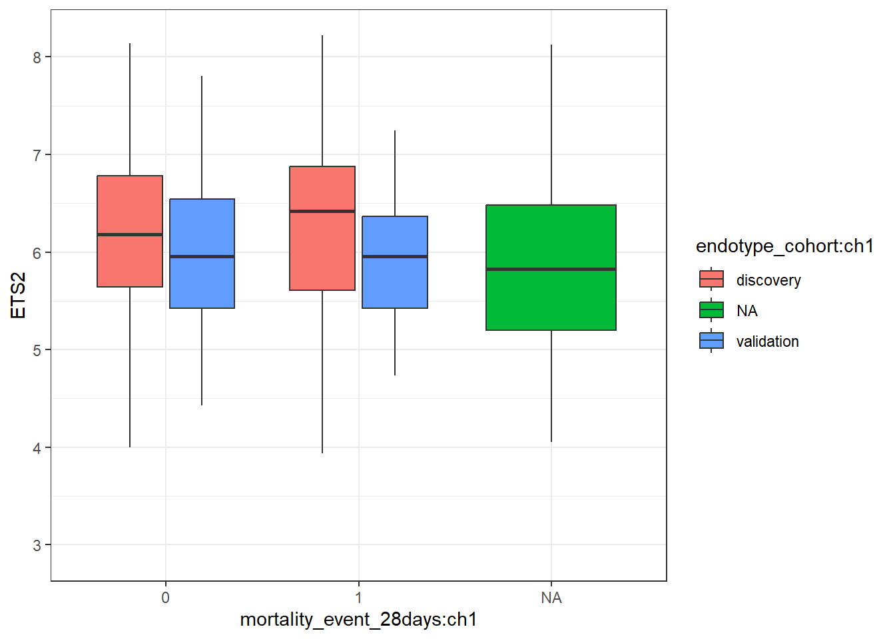
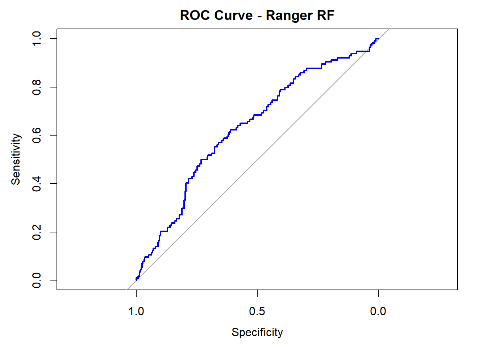
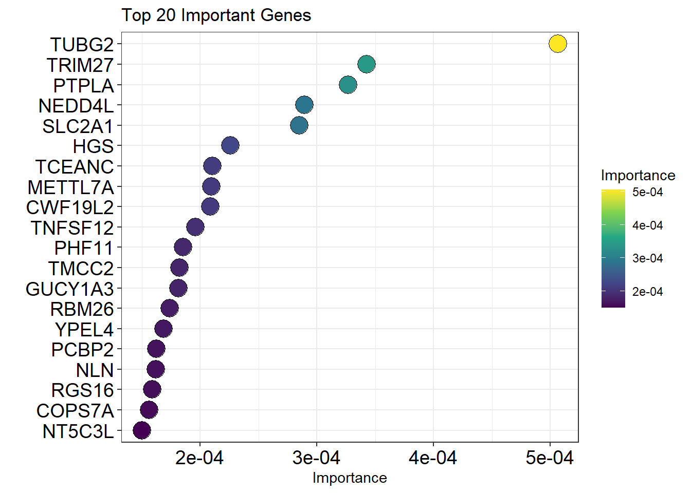
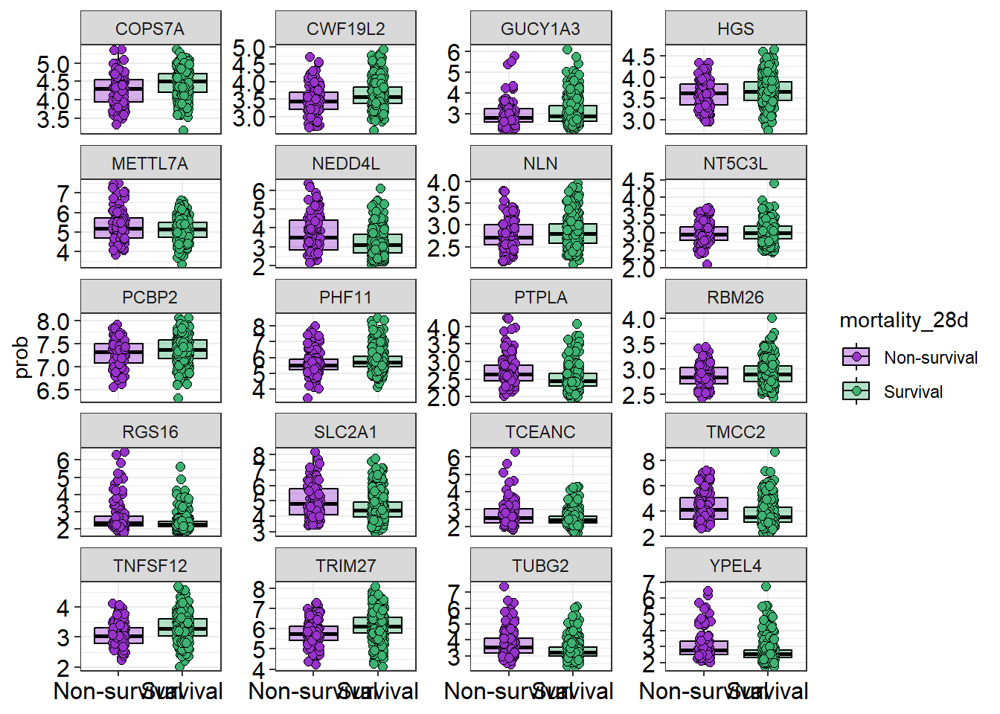

library(GEOquery)
library(biomaRt)
library(limma)
library(dplyr)
library(tidyr)
library(ggplot2)
library(ranger)
library(pROC)Sepsis RNA array analysis
RNA array profiles of over 800 sepsis patients with varying survivor status Data from GSE65682 and https://www.sciencedirect.com/science/article/pii/S2213260017302941#cesec20
setwd("C:/Users/dan94/rips_project/")LOADING IN DATA
load in the expression matrix
getGEO pulls directly from the GEO website
take the first slot of the data containing the correct platform
geo_data <- getGEO("GSE65682", GSEMatrix = T)
geo_data <- geo_data[[1]]extract the expression data and accompanying metadata
exprs_df <- exprs(geo_data)
exprs_df <- data.frame(exprs_df)
exprs_df$probe_id <- rownames(exprs_df)
sample_data <- pData(geo_data)GETTING GENE NAMES FOR PROBES
we access the gpl number from same page the geo object was obtained
find the appropraite columns (ID and Gene symbol) and make a df
add this df to the exprs df
changing gene’s with two names and “///” to just the first name
finally, to handle duplicate genes (presumably because an array can include multiple probes to the same gene) average them
gpl <- getGEO("GPL13667")
head(Table(gpl)) ID GeneChip Array Species Scientific Name
1 11715100_at Human Genome HG-U219 Array Homo sapiens
2 11715101_s_at Human Genome HG-U219 Array Homo sapiens
3 11715102_x_at Human Genome HG-U219 Array Homo sapiens
4 11715103_x_at Human Genome HG-U219 Array Homo sapiens
5 11715104_s_at Human Genome HG-U219 Array Homo sapiens
6 11715105_at Human Genome HG-U219 Array Homo sapiens
Annotation Date Sequence Type Sequence Source
1 20-Aug-10 Consensus sequence Affymetrix Proprietary Database
2 20-Aug-10 Consensus sequence Affymetrix Proprietary Database
3 20-Aug-10 Consensus sequence Affymetrix Proprietary Database
4 20-Aug-10 Consensus sequence Affymetrix Proprietary Database
5 20-Aug-10 Consensus sequence Affymetrix Proprietary Database
6 20-Aug-10 Consensus sequence Affymetrix Proprietary Database
Transcript ID(Array Design)
1 g21264570
2 g21264570
3 g21264570
4 g22748780
5 g30039713
6 g45580703
Target Description
1 g21264570 /TID=g21264570 /CNT=1 /FEA=FLmRNA /TIER=FL /STK=0 /DEF=g21264570 /REP_ORG=Homo sapiens
2 g21264570 /TID=g21264570 /CNT=1 /FEA=FLmRNA /TIER=FL /STK=0 /DEF=g21264570 /REP_ORG=Homo sapiens
3 g21264570 /TID=g21264570 /CNT=1 /FEA=FLmRNA /TIER=FL /STK=0 /DEF=g21264570 /REP_ORG=Homo sapiens
4 g22748780 /TID=g22748780 /CNT=1 /FEA=FLmRNA /TIER=FL /STK=0 /DEF=g22748780 /REP_ORG=Homo sapiens
5 g30039713 /TID=g30039713 /CNT=1 /FEA=FLmRNA /TIER=FL /STK=0 /DEF=g30039713 /REP_ORG=Homo sapiens
6 g45580703 /TID=g45580703 /CNT=1 /FEA=FLmRNA /TIER=FL /STK=0 /DEF=g45580703 /REP_ORG=Homo sapiens
Representative Public ID Archival UniGene Cluster UniGene ID
1 g21264570 --- Hs.247813
2 g21264570 --- Hs.247813
3 g21264570 --- Hs.247813
4 g22748780 --- Hs.465643
5 g30039713 --- Hs.352515
6 g45580703 --- Hs.439154
Genome Version
1 February 2009 (Genome Reference Consortium GRCh37)
2 February 2009 (Genome Reference Consortium GRCh37)
3 February 2009 (Genome Reference Consortium GRCh37)
4 February 2009 (Genome Reference Consortium GRCh37)
5 February 2009 (Genome Reference Consortium GRCh37)
6 February 2009 (Genome Reference Consortium GRCh37)
Alignments
1 chr6:26271145-26271612 (-) // 100.0 // p22.2
2 chr6:26271145-26271612 (-) // 100.0 // p22.2
3 chr6:26271145-26271612 (-) // 100.0 // p22.2
4 chr19:4639529-5145579 (+) // 48.53 // p13.3
5 chr17:72920369-72929640 (+) // 100.0 // q25.1
6 chr17:35732984-35749660 (+) // 98.15 // q12
Gene Title Gene Symbol
1 histone cluster 1, H3g HIST1H3G
2 histone cluster 1, H3g HIST1H3G
3 histone cluster 1, H3g HIST1H3G
4 tumor necrosis factor, alpha-induced protein 8-like 1 TNFAIP8L1
5 otopetrin 2 OTOP2
6 chromosome 17 open reading frame 78 C17orf78
Chromosomal Location GB_LIST SPOT_ID Unigene Cluster Type
1 chr6p21.3 NM_003534 full length
2 chr6p21.3 NM_003534 full length
3 chr6p21.3 NM_003534 full length
4 chr19p13.3 NM_001167942,NM_152362 full length
5 chr17q25.1 NM_178160 full length
6 chr17q12 NM_173625 full length
Ensembl Entrez Gene SwissProt EC OMIM RefSeq Protein ID
1 --- 8355 P68431 --- 602815 NP_003525
2 ENSG00000178458 8355 P68431 --- 602815 NP_003525
3 --- 8355 P68431 --- 602815 NP_003525
4 ENSG00000185361 126282 Q8WVP5 --- --- NP_001161414 /// NP_689575
5 ENSG00000183034 92736 Q7RTS6 --- 607827 NP_835454
6 ENSG00000167230 284099 Q8N4C9 --- --- NP_775896
RefSeq Transcript ID FlyBase AGI WormBase MGI Name RGD Name
1 NM_003534 --- --- --- --- ---
2 NM_003534 --- --- --- --- ---
3 NM_003534 --- --- --- --- ---
4 NM_001167942 /// NM_152362 --- --- --- --- ---
5 NM_178160 --- --- --- --- ---
6 NM_173625 --- --- --- --- ---
SGD accession number
1 ---
2 ---
3 ---
4 ---
5 ---
6 ---
Gene Ontology Biological Process
1 0006334 // nucleosome assembly // inferred from electronic annotation
2 0006334 // nucleosome assembly // inferred from electronic annotation
3 0006334 // nucleosome assembly // inferred from electronic annotation
4 ---
5 ---
6 ---
Gene Ontology Cellular Component
1 0000786 // nucleosome // inferred from electronic annotation /// 0005634 // nucleus // inferred from electronic annotation /// 0005694 // chromosome // inferred from electronic annotation
2 0000786 // nucleosome // inferred from electronic annotation /// 0005634 // nucleus // inferred from electronic annotation /// 0005694 // chromosome // inferred from electronic annotation
3 0000786 // nucleosome // inferred from electronic annotation /// 0005634 // nucleus // inferred from electronic annotation /// 0005694 // chromosome // inferred from electronic annotation
4 ---
5 0016020 // membrane // inferred from electronic annotation /// 0016021 // integral to membrane // inferred from electronic annotation
6 0016020 // membrane // inferred from electronic annotation /// 0016021 // integral to membrane // inferred from electronic annotation
Gene Ontology Molecular Function
1 0003677 // DNA binding // inferred from electronic annotation /// 0005515 // protein binding // inferred from physical interaction
2 0003677 // DNA binding // inferred from electronic annotation /// 0005515 // protein binding // inferred from physical interaction
3 0003677 // DNA binding // inferred from electronic annotation /// 0005515 // protein binding // inferred from physical interaction
4 ---
5 ---
6 ---
Pathway
1 ---
2 ---
3 ---
4 ---
5 ---
6 ---
InterPro
1 ---
2 ---
3 ---
4 ---
5 IPR004878 // Protein of unknown function DUF270 // 1.0E-6 /// IPR004878 // Protein of unknown function DUF270 // 1.0E-13
6 ---
Trans Membrane
1 ---
2 ---
3 ---
4 ---
5 NP_835454.1 // span:30-52,62-81,101-120,135-157,240-262,288-310,327-349,369-391,496-515,525-547 // numtm:10
6 AAH34672.1 // span:184-206 // numtm:1 /// NP_775896.3 // span:184-206 // numtm:1
QTL
1 ---
2 ---
3 ---
4 ---
5 ---
6 ---
Annotation Description
1 This probe set was annotated using the Matching Probes based pipeline to a Entrez Gene identifier using 1 transcripts. // false // Matching Probes // A
2 This probe set was annotated using the Matching Probes based pipeline to a Entrez Gene identifier using 2 transcripts. // false // Matching Probes // A
3 This probe set was annotated using the Matching Probes based pipeline to a Entrez Gene identifier using 1 transcripts. // false // Matching Probes // A
4 This probe set was annotated using the Matching Probes based pipeline to a Entrez Gene identifier using 5 transcripts. // false // Matching Probes // A
5 This probe set was annotated using the Matching Probes based pipeline to a Entrez Gene identifier using 3 transcripts. // false // Matching Probes // A
6 This probe set was annotated using the Matching Probes based pipeline to a Entrez Gene identifier using 5 transcripts. // false // Matching Probes // A
Annotation Transcript Cluster
1 NM_003534(11)
2 BC079835(11),NM_003534(11)
3 NM_003534(11)
4 BC017672(11),BC044250(9),ENST00000327473(11),NM_001167942(11),NM_152362(11)
5 ENST00000331427(11),ENST00000426069(11),NM_178160(11)
6 AK096966(10),BC034672(11),ENST00000300618(11),ENST00000321564(11),NM_173625(11)
Transcript Assignments
1 NM_003534 // Homo sapiens histone cluster 1, H3g (HIST1H3G), mRNA. // refseq // 11 // ---
2 BC079835 // Homo sapiens histone cluster 1, H3g, mRNA (cDNA clone IMAGE:5935692). // gb_htc // 11 // --- /// ENST00000321285 // cdna:known chromosome:GRCh37:6:26271202:26271612:-1 gene:ENSG00000178458 // ensembl // 11 // --- /// GENSCAN00000044911 // cdna:Genscan chromosome:GRCh37:6:26271202:26271612:-1 // ensembl // 11 // --- /// NM_003534 // Homo sapiens histone cluster 1, H3g (HIST1H3G), mRNA. // refseq // 11 // ---
3 NM_003534 // Homo sapiens histone cluster 1, H3g (HIST1H3G), mRNA. // refseq // 11 // ---
4 BC017672 // Homo sapiens tumor necrosis factor, alpha-induced protein 8-like 1, mRNA (cDNA clone MGC:17791 IMAGE:3885999), complete cds. // gb // 11 // --- /// BC044250 // Homo sapiens tumor necrosis factor, alpha-induced protein 8-like 1, mRNA (cDNA clone IMAGE:5784807). // gb // 9 // --- /// ENST00000327473 // cdna:known chromosome:GRCh37:19:4639530:4653952:1 gene:ENSG00000185361 // ensembl // 11 // --- /// NM_001167942 // Homo sapiens tumor necrosis factor, alpha-induced protein 8-like 1 (TNFAIP8L1), transcript variant 1, mRNA. // refseq // 11 // --- /// NM_152362 // Homo sapiens tumor necrosis factor, alpha-induced protein 8-like 1 (TNFAIP8L1), transcript variant 2, mRNA. // refseq // 11 // ---
5 ENST00000331427 // cdna:known chromosome:GRCh37:17:72920370:72929640:1 gene:ENSG00000183034 // ensembl // 11 // --- /// ENST00000426069 // cdna:known chromosome:GRCh37:17:72920370:72929640:1 gene:ENSG00000183034 // ensembl // 11 // --- /// NM_178160 // Homo sapiens otopetrin 2 (OTOP2), mRNA. // refseq // 11 // ---
6 AK096966 // Homo sapiens cDNA FLJ39647 fis, clone SMINT2004781. // gb // 10 // --- /// BC034672 // Homo sapiens chromosome 17 open reading frame 78, mRNA (cDNA clone MGC:34759 IMAGE:5184947), complete cds. // gb // 11 // --- /// ENST00000300618 // cdna:known chromosome:GRCh37:17:35732985:35749660:1 gene:ENSG00000167230 // ensembl // 11 // --- /// ENST00000321564 // cdna:known chromosome:GRCh37:17:35732985:35749660:1 gene:ENSG00000167230 // ensembl // 11 // --- /// NM_173625 // Homo sapiens chromosome 17 open reading frame 78 (C17orf78), mRNA. // refseq // 11 // ---
Annotation Notes
1 BC079835 // gb_htc // 6 // Cross Hyb Matching Probes
2 ---
3 GENSCAN00000044911 // ensembl // 4 // Cross Hyb Matching Probes /// ENST00000321285 // ensembl // 4 // Cross Hyb Matching Probes /// BC079835 // gb_htc // 7 // Cross Hyb Matching Probes
4 ---
5 GENSCAN00000031612 // ensembl // 8 // Cross Hyb Matching Probes
6 ---probes <- data.frame(probe_id = Table(gpl)[["ID"]], gene_id = Table(gpl)[["Gene Symbol"]])
exprs_df <- merge(exprs_df, probes, by = "probe_id")
exprs_df <- exprs_df[, -1]
exprs_df$gene_id <- sub(" ///.*", "", exprs_df$gene_id)
exprs_df <- exprs_df %>%
filter(!is.na(gene_id) & gene_id != "") %>%
group_by(gene_id) %>%
summarise(across(where(is.numeric), ~ mean(.x, na.rm = TRUE)), .groups = "drop")
#rownames(exprs_df) <- exprs_df$gene_idSETTING UP DATA
transpose the expression df to have samples as a row
this can then be merged with the metadata
this results in a single df with each patient in a row, with their expression data and clinical info in the columns
full_df <- pivot_longer(exprs_df, names_to = "sample_id", values_to = "expression", cols = 2:803)
full_df <- pivot_wider(full_df, names_from = gene_id, values_from = expression)
full_df <- as.data.frame(full_df)
sample_data$sample_id <- rownames(sample_data)
full_df <- merge(full_df, sample_data, by = "sample_id")PLOTTING GENE EXPRESSION
ggplot(full_df, aes(x = `mortality_event_28days:ch1`, y = ETS2, fill = `endotype_cohort:ch1`))+geom_boxplot(outlier.shape = NA)+theme_bw()
SAVE FULL DATAFRAME
saveRDS(full_df, file = "sepsis_rna_array.rds", compress = F)RANDOM FOREST TO DISTINGUISH SAMPLES BY MORTALITY
select only gene columns plus grouping variable of interest
renaming mortality column for ease and removing old name
make all gene columns numeric
then make grouping variable a factor
rf_data <- full_df[, c(3:11520,11564,11568,11571,11572)]
rf_data$mortality_28d <- rf_data$`mortality_event_28days:ch1`
rf_data <- rf_data[, -11521]
rf_data[, 1:11518] <- lapply(rf_data[, 1:11518], as.numeric)
rf_data[, 11519:11522] <- lapply(rf_data[, 11519:11522], as.factor)
rf_data <- filter(rf_data, mortality_28d %in% c("0","1"))
colnames(rf_data) <- sub("-", "_", colnames(rf_data))
colnames(rf_data) <- sub("@", "", colnames(rf_data))
colnames(rf_data) <- sub(" ", "", colnames(rf_data))
rf_data$mortality_28d <- droplevels(rf_data$mortality_28d)run random forest
y <- rf_data$mortality_28d
x <- rf_data[, -11522]
set.seed(61)
rf_model <- rf_model <- ranger(
x = x, y = y,
num.trees = 5000,
importance = "permutation",
probability = TRUE, # needed for ROC/AUC
class.weights = c("0" = 1, "1" = 4) # weight minority class
)model diagnostics
rf_modelRanger result
Call:
ranger(x = x, y = y, num.trees = 5000, importance = "permutation", probability = TRUE, class.weights = c(`0` = 1, `1` = 4))
Type: Probability estimation
Number of trees: 5000
Sample size: 479
Number of independent variables: 11521
Mtry: 107
Target node size: 10
Variable importance mode: permutation
Splitrule: gini
OOB prediction error (Brier s.): 0.1762718 rf_pred <- rf_model$predictions[, "1"]
roc_obj <- roc(rf_data$mortality_28d, rf_pred)
plot(roc_obj, col = "blue", lwd = 2, main = "ROC Curve - Ranger RF")
auc_val <- auc(roc_obj)
print(auc_val)Area under the curve: 0.6329View important features (interactions)
vi_df <- data.frame(
Gene = names(rf_model$variable.importance),
Importance = rf_model$variable.importance
)
ggplot(vi_df[order(vi_df$Importance, decreasing = TRUE)[1:20], ],
aes(x = reorder(Gene, Importance), y = Importance, fill = Importance)) +
geom_point(shape = 21, size = 6)+
coord_flip() +
labs(title = "Top 20 Important Genes", x = "", y = "Importance")+
theme_bw()+theme(axis.text = element_text(size = 14, colour = "black"))+
scale_fill_viridis_c()
boxplots of specific interactions and stats
interactions_plot <- pivot_longer(rf_data, names_to = "interaction", values_to = "prob", 1:11518)
top_features <- vi_df[order(vi_df$Importance, decreasing = TRUE)[1:20],]
interactions_plot <- filter(interactions_plot, interaction %in% top_features$Gene)
options(scipen = 999)
interactions_plot$mortality_28d <- factor(interactions_plot$mortality_28d, levels = c("1", "0"),
labels = c("Non-survival", "Survival"))
ggplot(interactions_plot, aes(x = mortality_28d, y = prob, fill = mortality_28d))+
geom_boxplot(outlier.shape = NA, alpha = 0.4, colour = "black")+
geom_jitter(width = 0.1, shape = 21, colour = "black", size = 2)+
theme_bw()+
facet_wrap(~interaction, scales = "free_y", ncol = 4)+
scale_fill_manual(values = c("darkorchid", "mediumseagreen"))+
xlab(NULL)+
theme(axis.text = element_text(size = 12, colour = "black"))
results <- interactions_plot %>%
group_by(interaction) %>%
summarise(
p_value = wilcox.test(prob ~ mortality_28d)$p.value,
.groups = "drop"
) %>%
arrange(p_value)